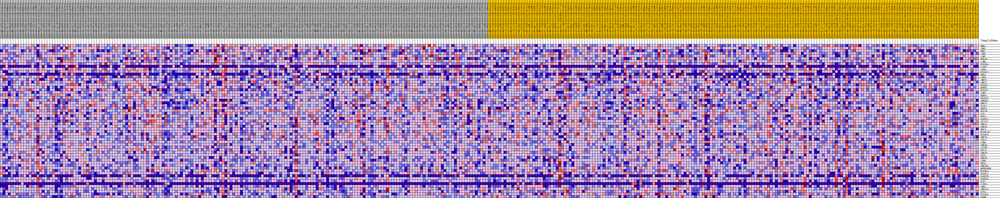

| | | Dataset | VCAN.VCAN.cls#h_versus_l.VCAN.cls#h_versus_l_repos |
| Phenotype | VCAN.cls#h_versus_l_repos |
| Upregulated in class | l |
| GeneSet | KEGG_RNA_DEGRADATION |
| Enrichment Score (ES) | -0.42034787 |
| Normalized Enrichment Score (NES) | -1.4184657 |
| Nominal p-value | 0.12863071 |
| FDR q-value | 1.0 |
| FWER p-Value | 0.871 |
Table: GSEA Results Summary
 Fig 1: Enrichment plot: KEGG_RNA_DEGRADATION
Fig 1: Enrichment plot: KEGG_RNA_DEGRADATION
Profile of the Running ES Score & Positions of GeneSet Members on the Rank Ordered List
| SYMBOL | TITLE | RANK IN GENE LIST | RANK METRIC SCORE | RUNNING ES | CORE ENRICHMENT | | 1 | ENO1 | na | 3173 | 0.070 | -0.0313 | No |
| 2 | XRN2 | na | 3649 | 0.066 | -0.0152 | No |
| 3 | ENO2 | na | 5267 | 0.055 | -0.0240 | No |
| 4 | LSM2 | na | 7801 | 0.041 | -0.0545 | No |
| 5 | LSM7 | na | 8069 | 0.040 | -0.0445 | No |
| 6 | HSPA9 | na | 10405 | 0.029 | -0.0759 | No |
| 7 | LSM6 | na | 10451 | 0.029 | -0.0659 | No |
| 8 | EXOSC4 | na | 11178 | 0.026 | -0.0694 | No |
| 9 | C1DP2 | na | 11223 | 0.026 | -0.0606 | No |
| 10 | LSM3 | na | 11543 | 0.024 | -0.0573 | No |
| 11 | EXOSC3 | na | 11921 | 0.023 | -0.0557 | No |
| 12 | ENO3 | na | 12088 | 0.022 | -0.0505 | No |
| 13 | LSM5 | na | 12452 | 0.021 | -0.0493 | No |
| 14 | CNOT2 | na | 13457 | 0.017 | -0.0612 | No |
| 15 | CNOT7 | na | 14620 | 0.013 | -0.0776 | No |
| 16 | EXOSC7 | na | 15412 | 0.010 | -0.0882 | No |
| 17 | MTREX | na | 15716 | 0.009 | -0.0903 | No |
| 18 | EXOSC2 | na | 16701 | 0.006 | -0.1059 | No |
| 19 | LSM1 | na | 17513 | 0.004 | -0.1192 | No |
| 20 | WDR61 | na | 17975 | 0.002 | -0.1266 | No |
| 21 | EXOSC5 | na | 18249 | 0.002 | -0.1310 | No |
| 22 | TENT4A | na | 21213 | -0.001 | -0.1843 | No |
| 23 | PNPT1 | na | 21723 | -0.002 | -0.1927 | No |
| 24 | PATL1 | na | 22247 | -0.003 | -0.2010 | No |
| 25 | HSPD1 | na | 22580 | -0.004 | -0.2054 | No |
| 26 | DCP1B | na | 23279 | -0.006 | -0.2157 | No |
| 27 | C1D | na | 24053 | -0.008 | -0.2266 | No |
| 28 | EDC4 | na | 25043 | -0.011 | -0.2404 | No |
| 29 | PAPOLA | na | 25234 | -0.012 | -0.2396 | No |
| 30 | SKIV2L | na | 27119 | -0.017 | -0.2675 | No |
| 31 | CNOT1 | na | 27438 | -0.018 | -0.2667 | No |
| 32 | CNOT9 | na | 28371 | -0.020 | -0.2760 | No |
| 33 | EDC3 | na | 28388 | -0.020 | -0.2688 | No |
| 34 | EXOSC10 | na | 28955 | -0.022 | -0.2709 | No |
| 35 | EXOSC9 | na | 33854 | -0.035 | -0.3464 | No |
| 36 | CNOT3 | na | 34240 | -0.036 | -0.3398 | No |
| 37 | TTC37 | na | 34261 | -0.036 | -0.3266 | No |
| 38 | LSM4 | na | 36797 | -0.043 | -0.3565 | No |
| 39 | CNOT4 | na | 38697 | -0.048 | -0.3730 | No |
| 40 | ZCCHC7 | na | 39138 | -0.049 | -0.3626 | No |
| 41 | DCP1A | na | 39987 | -0.051 | -0.3587 | No |
| 42 | CNOT6 | na | 40200 | -0.052 | -0.3431 | No |
| 43 | DCPS | na | 40266 | -0.052 | -0.3248 | No |
| 44 | CNOT8 | na | 44850 | -0.065 | -0.3834 | No |
| 45 | LSM8 | na | 45960 | -0.069 | -0.3778 | No |
| 46 | DDX6 | na | 48311 | -0.077 | -0.3917 | Yes |
| 47 | CNOT6L | na | 49324 | -0.081 | -0.3800 | Yes |
| 48 | MPHOSPH6 | na | 50204 | -0.085 | -0.3644 | Yes |
| 49 | EXOSC6 | na | 50549 | -0.086 | -0.3384 | Yes |
| 50 | EXOSC1 | na | 52037 | -0.094 | -0.3301 | Yes |
| 51 | PAPOLB | na | 52207 | -0.096 | -0.2975 | Yes |
| 52 | PAPOLG | na | 52231 | -0.096 | -0.2622 | Yes |
| 53 | DCP2 | na | 52391 | -0.097 | -0.2290 | Yes |
| 54 | C1DP3 | na | 53012 | -0.102 | -0.2023 | Yes |
| 55 | XRN1 | na | 53584 | -0.107 | -0.1727 | Yes |
| 56 | CNOT10 | na | 53761 | -0.109 | -0.1352 | Yes |
| 57 | DIS3 | na | 55062 | -0.142 | -0.1056 | Yes |
| 58 | EXOSC8 | na | 55089 | -0.145 | -0.0521 | Yes |
| 59 | PARN | na | 55133 | -0.148 | 0.0024 | Yes |
Table: GSEA details [plain text format]

Fig 2: KEGG_RNA_DEGRADATION
Blue-Pink O' Gram in the Space of the Analyzed GeneSet
Fig 3: KEGG_RNA_DEGRADATION: Random ES distribution
Gene set null distribution of ES for KEGG_RNA_DEGRADATION